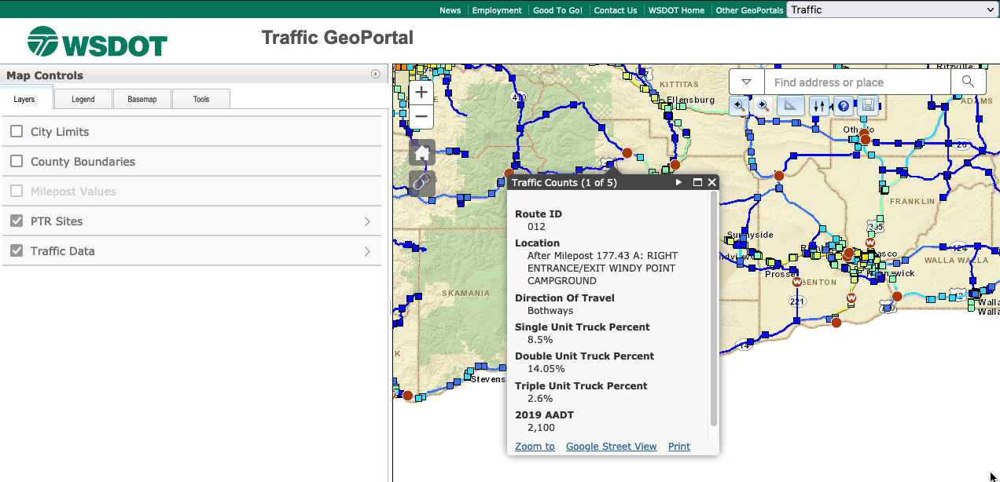

1 Data Stewarship Fundamentals
Example 1
Throughout the first chapter of this book we’ve discussed the idea that data are fundamentally relational - they mean different things to different customers at different points in time. To understand this relational nature of data it can be helpful to look at an example of how the same data are displayed to customers in different settings. These settings drive the stewarship of data given the needs of a customer that may vary over time.
Below is a screenshot of the Washington Department of Transportation’s Traffic GeoData Portal. This map displays realtime traffic count data from routes and interstates throughout Washington.

This traffic map is interactive - it allows a customer to select a route, or even a point on a route, where data traffic is collected and see the realtime estimates of things like “How many single unit trucks are on this route in the last hour.” This view of the data is useful for getting a quick overview of what the state of traffic is at any one moment in time. But, lets assume that instead of a quick overview of the realtime data an analyst at DOL wants access to the data that is powering this visualiztion. They may want this data for a variety of reasons - they may want to map all of the single use trucks on the road for June 1st and determine what percentage of singule use trucks are licsensed in the state of the WA. The WSDOT traffic geodata portal allows us to view this data by selecting a polygon and “printing” the data. If we choose to do this then we get an easy to manipulate data table that looks like the following:
| Object ID | Route ID | Location | Direction of Travel | Single Unit Truck Percent | Double Unit Truck Percent | Triple Unit Truck Percent | 2019 AADT | Shape |
|---|---|---|---|---|---|---|---|---|
| 1220 | 410 | At Milepost 116.26 A: PERMANENT TRAFFIC RECORDER S818 WEST | Bothways | 9.87 | 2.14 | 0.06 | 2,100 | Point |
| 3624 | 12 | At Milepost 185.62 A: PERMANENT TRAFFIC RECORDER S818 EAST | Bothways | 4.93 | 4.31 | 1.38 | 4,500 | Point |
| 2005 | 12 | Before Milepost 185.44 A: RIGHT WYE CONNECTION SR 12 | Bothways | Null | Null | Null | 2,500 | Point |
| 3809 | 12 | At Milepost 185.25 A: PERMANENT TRAFFIC RECORDER S818 SOUTH | Bothways | 7.45 | 7.18 | 1.34 | 2,500 | Point |
| 2759 | 12 | After Milepost 185.48 A: RIGHT WYE CONNECTION SR 12 | Bothways | Null | Null | Null | 4,500 | Point |
| 4329 | 12 | From Milepost 188.65 A to Milepost 189.87 A | 5,700 | Polyline | ||||
| 2163 | 12 | From Milepost 185.48 A to Milepost 188.65 A | 4,500 | Polyline | ||||
| 2323 | 410 | From Milepost 114.40 A to Milepost 116.37 A | 2,100 | Polyline | ||||
| 4299 | 12 | From Milepost 178.86 A to Milepost 183.45 A | 2,300 | Polyline | ||||
| 1434 | 12 | From Milepost 183.45 A to Milepost 185.48 A | 2,500 | Polyline |